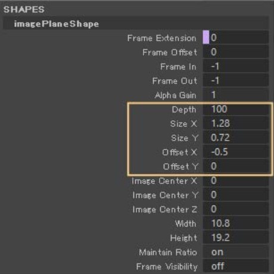
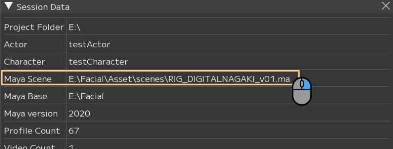

Tips
This page describes useful tips and various features of FCS.
If there is no FCS camera in the scene, FCS creates a camera based on the position of the persp camera.
To always output playblasts at a consistent field of view, we recommend placing an image plane of the appropriate position and size in the scene in advance and saving it as a base scene.
*Before creating, check the FCS settings window File > Settings > ▼Maya to see how the camera name and image plane name are specified.
The following instructions assume the names fcs_cam and imagePlane are specified.
Creating a Base Scene
① Position the FCS camera so that the face model is centered.
Example attributes used: fcs_cam.translateY, fcs_cam.translateZ, fcs_camShape.focalLength

② With the FCS camera active, place the still image plane via View > Image Plane > Import Image…

③ Resize the image plane to your preferred size and move it to the desired location.
Example attributes used: imagePlaneShape.depth, imagePlaneShape.sizeX, imagePlaneShape.sizeY, imagePlaneShape.offsetX, imagePlaneShape.offsetY
{kind=link}

④ Set imagePlaneShape.useFrameExtension to ON (1) to play sequential still images.

⑤ Save the Maya scene and register it in Maya Scene from File > Session▶ > Info…
{kind=link}

How to Change the Layout
You can load layout presets from View window → Layout.
Each window can also be moved and arranged within FCS by drag & drop.
Please work with your preferred arrangement.
You can also save modified layouts from View window → Layout.
Note
For details on the View window, see User Guide/Menu/view.
Saved layout data is stored at the following path.
C:\Users\$USER\.fcs\Cortado\$FCS_VERSION\layouts\saved